viewof x1 = Inputs.range([0, 1], {step: 1, label: "Input x1"});
viewof x2 = Inputs.range([0, 1], {step: 1, label: "Input x2"});
viewof w1 = Inputs.range([-2, 2], {value: 1, step: 0.1, label: "Weight w1"});
viewof w2 = Inputs.range([-2, 2], {value: 1, step: 0.1, label: "Weight w2"});
viewof bias = Inputs.range([-2, 2], {value: -0.5, step: 0.1, label: "Bias b"});Machine Learning with TensorFlow & Neural Networks
An ECE Perspective: From Tensors to Deep Learning
Imron Rosyadi
Introduction to TensorFlow
An end-to-end open source machine learning platform
What Is TensorFlow Good For?
- Neural Networks: Advanced architectures, key for modern ML breakthroughs.
- Distributed Computing: Handles massive datasets across multiple machines.
- GPU and TPU Support: Specialized hardware acceleration for faster training.
Tensor
An N-dimensional array of data
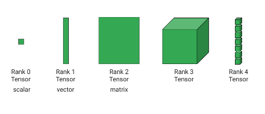center
TensorFlow: Graphs
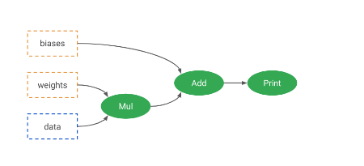center
TensorFlow: Graphs
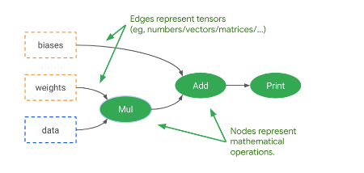center
TensorFlow: Graphs
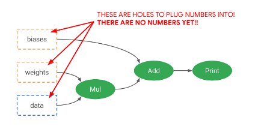center
TensorFlow: Versions
TensorFlow 1
- Lazy execution by default
- Awkward programming model
TensorFlow 2
- Eager execution by default
- Keras programming model
TensorFlow Is Separated Into Abstraction Layers
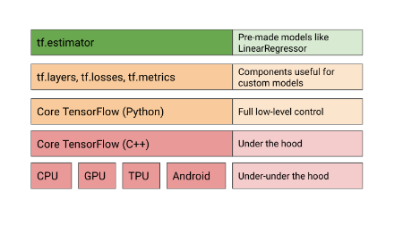center
Your Turn!
Note
Exercise: Explore basic tensor operations in TensorFlow.
Linear Regression With TensorFlow
But Why?
- Scalability: Handling huge datasets and distributed training.
- Unified Ecosystem: Prepares for advanced deep learning tasks.
- Learning Tool: Practice with familiar concepts in a new framework.
LinearRegressor
An implementation of Estimator
LinearRegressor
#| max-lines: 10
import tensorflow as tf
# Define feature columns (e.g., numeric_column, categorical_column_with_vocabulary_list)
feature_columns = [
tf.feature_column.numeric_column("feature1"),
tf.feature_column.numeric_column("feature2")
]
lr = tf.estimator.LinearRegressor(
feature_columns=feature_columns
)
# Dummy input functions for demonstration
def training_input():
features = {"feature1": [1.0, 2.0], "feature2": [10.0, 20.0]}
labels = [30.0, 40.0]
return tf.data.Dataset.from_tensor_slices((features, labels)).batch(1)
def testing_input():
features = {"feature1": [3.0, 4.0], "feature2": [30.0, 40.0]}
return tf.data.Dataset.from_tensor_slices(features).batch(1)
lr.train(input_fn=training_input, steps=1) # Train for a single step for demo
p = lr.predict(input_fn=testing_input)
# print(list(p)) # Uncomment to see predictionsLinearRegressor: Training Function Details
#| max-lines: 12
import tensorflow as tf
import pandas as pd
# Dummy DataFrame for demonstration
training_df = pd.DataFrame({
"MedInc": [1.0, 2.0, 3.0, 4.0, 5.0],
"HouseAge": [10.0, 20.0, 30.0, 40.0, 50.0],
"target_charges": [100.0, 150.0, 200.0, 250.0, 300.0]
})
feature_columns = ["MedInc", "HouseAge"]
target_column = "target_charges"
def training_input():
ds = tf.data.Dataset.from_tensor_slices((
{c: training_df[c].values for c in feature_columns}, # feature map
training_df[target_column].values # labels
))
ds = ds.repeat(100) # Repeat data 100 times
ds = ds.shuffle(buffer_size=10000) # Shuffle data for better training
ds = ds.batch(100) # Process in mini-batches of 100
return ds
# Example usage (not run, just definition)
# input_dataset = training_input()
# for element in input_dataset.take(1):
# print(element)LinearRegressor: Optimizer
#| max-lines: 12
import tensorflow as tf
# Example feature columns
feature_columns = [tf.feature_column.numeric_column("x")]
# Create an Adam optimizer with a specific learning rate
adam_optimizer = tf.keras.optimizers.Adam(
learning_rate=0.001,
epsilon=1e-08 # Added for Keras compatibility
)
# Instantiate LinearRegressor with the custom optimizer
linear_regressor = tf.estimator.LinearRegressor(
feature_columns=feature_columns,
optimizer=adam_optimizer,
)
# You would then call .train() and .predict() on linear_regressor
# print(linear_regressor) # Uncomment to inspect the estimatorLinearRegressor: Distribution
# Dummy for conceptual demonstration - actual distribution
# requires a multi-device setup not available in pyodide.
import tensorflow as tf
# Example feature columns
feature_columns = [tf.feature_column.numeric_column("x")]
# Define a distributed strategy (conceptually)
# This part won't execute effectively in pyodide, but shows the API.
try:
mirrored_strategy = tf.distribute.MirroredStrategy()
config = tf.estimator.RunConfig(
train_distribute=mirrored_strategy,
eval_distribute=mirrored_strategy,
)
except RuntimeError as e:
print(f"Distribution Strategy initialization skipped in Pyodide: {e}")
config = None # Fallback if strategy cannot be initialized
linear_regressor = tf.estimator.LinearRegressor(
feature_columns=feature_columns,
config=config,
)
# print(linear_regressor) # Uncomment to inspectYour Turn! Predicting Housing Prices
Important
Lab: Apply LinearRegressor to predict housing prices using the California census data.
Neural Networks
Neural Networks: Good?
center
Neural Networks: Bad?
center
Neural Networks: Hype?
center
History & Motivation
Neural Networks: Inspired by Nature
center
Neural Networks: Inspired by Nature
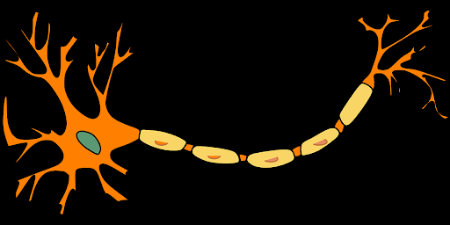center
Neural Networks: Inspired by Nature
center
Neural Networks: Cutting Edge?
center
Artificial Neural Networks (ANN)
- Computational networks inspired by biological systems.
- Feed-forward networks: Information flows in one direction.
- Backpropagation: Algorithm for training ANNs by adjusting weights.
- Specific types: Convolutional Neural Networks (CNN), Recurrent Neural Networks (RNN).
Artificial Neural Networks (ANN)
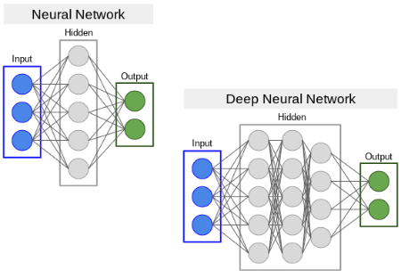center
Perceptron
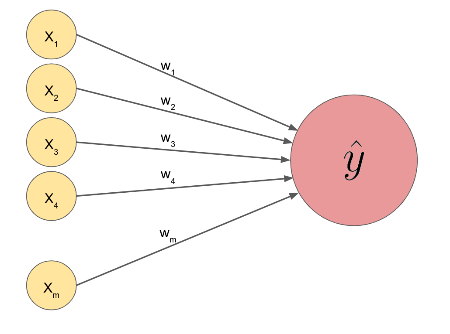center
Perceptron: The Math
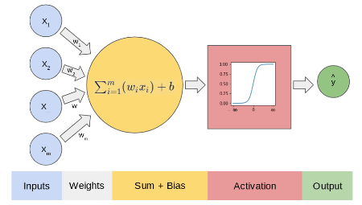
The core computation: \[ \text{sum} = \sum_{i=1}^{m} w_i x_i + b = W^T X + b \] The result sum then goes through an activation function \(f(\text{sum})\) to produce the output.
Interactive Perceptron Demo
Adjust inputs and weights to see the output.
Perceptron Example: Predicting ML Study
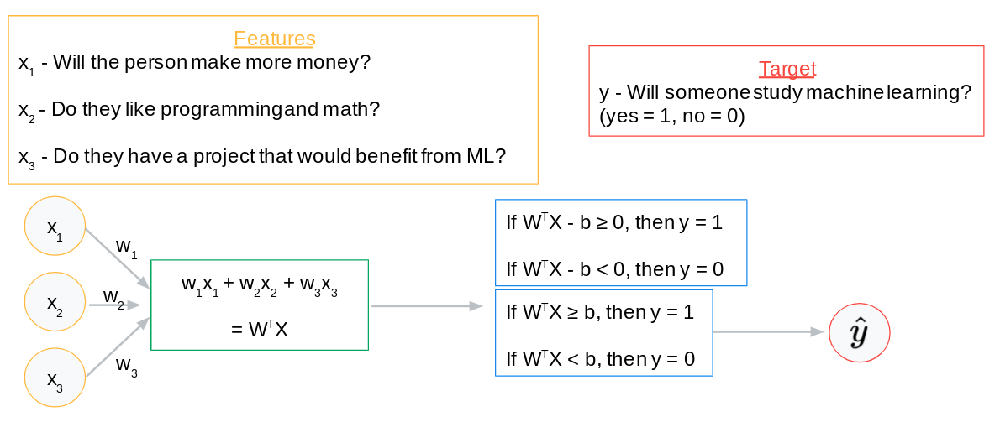center
- \(x_1\): Will make more money? (1=Yes, 0=No)
- \(x_2\): Loves programming/math? (1=Yes, 0=No)
- \(x_3\): Has project benefiting from ML? (1=Yes, 0=No)
\[\sum_{i=1}^{3} w_i x_i - \text{threshold} \geq 0 \implies \text{Studies ML (1)}\] \[\sum_{i=1}^{3} w_i x_i - \text{threshold} < 0 \implies \text{Does Not Study ML (0)}\]
Machine Learning Process (Review)
- Infer/Predict/Forecast: Use the model to make predictions.
- Calculate Error/Loss/Cost: Quantify prediction inaccuracy.
- Train/Learn: Adjust model parameters (weights, biases) to minimize error.
- Iterate: Repeat until a stopping condition is met.
Perceptron Example: Weights & Bias
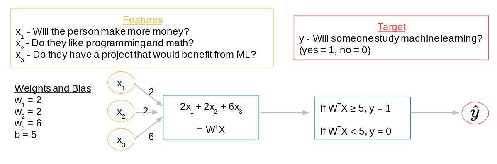center
- \(w_1 = 2\), \(w_2 = 2\), \(w_3 = 6\)
- Threshold = 5
\[\text{Predict } 1 \text{ if } 2x_1 + 2x_2 + 6x_3 \geq 5\] \[\text{Predict } 0 \text{ if } 2x_1 + 2x_2 + 6x_3 < 5\]
Perceptron Example: Kelly’s Input
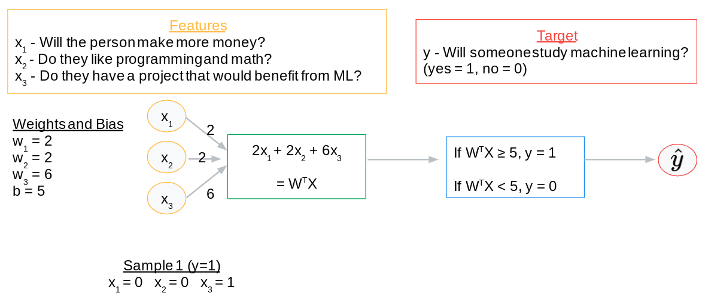center
- \(x_1 = 0\) (Won’t make more money)
- \(x_2 = 0\) (Doesn’t love programming/math)
- \(x_3 = 1\) (Has a project benefiting from ML)
Perceptron Example: Kelly’s Prediction
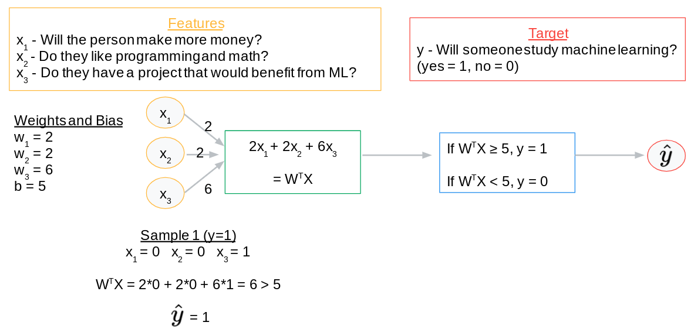center
\[2(0) + 2(0) + 6(1) = 6\]
Since \(6 \geq 5\), the model predicts: YES, Kelly will study ML!
Perceptron Example: Riley’s Input
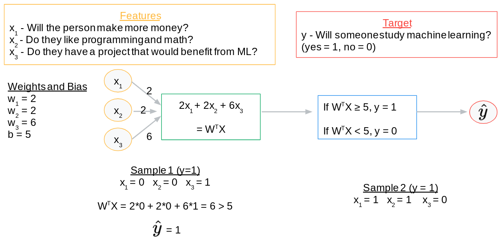center
- \(x_1 = 1\) (Will make more money)
- \(x_2 = 1\) (Loves programming/math)
- \(x_3 = 0\) (No project benefiting from ML)
Perceptron Example: Riley’s Prediction
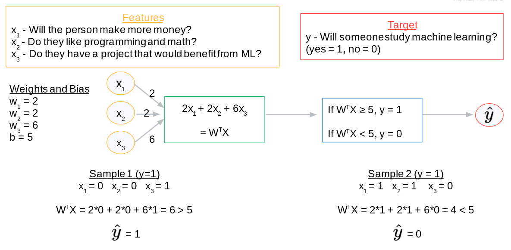center
\[2(1) + 2(1) + 6(0) = 4\]
Since \(4 < 5\), the model predicts: NO, Riley will not study ML.
Perceptron Example: Learning Process
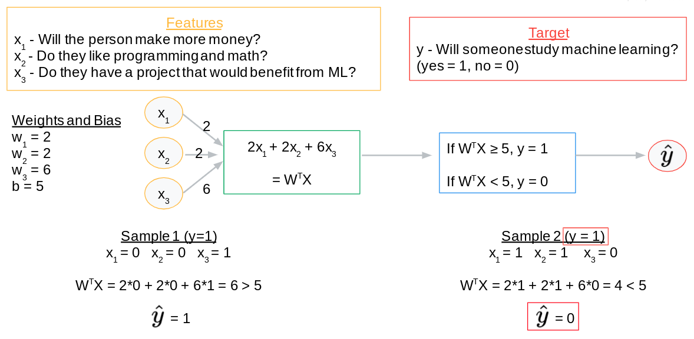center
- Kelly: Prediction = 1 (Correct, actual = 1)
- Riley: Prediction = 0 (Incorrect, actual = 1)
The model needs to adjust weights and bias to correctly predict for Riley. This involves optimization (e.g., gradient descent) and backpropagation (applying the chain rule to update weights across layers).
Machine Learning Process (Neural Networks)
- Infer/Predict/Forecast: Compute \(f(X, W, B)\), involving compositions of activation functions and many matrix multiplications across layers.
- Calculate Error/Loss/Cost: Use metrics like MSE, MAE to quantify discrepancy between predicted and actual values.
- Train/Learn (Optimization):
- Adjust \(W\) and \(B\) in the direction that minimizes cost.
- This direction is typically found via gradient descent.
- Gradients for complex networks are computed efficiently using the chain rule, implemented through backpropagation.
- Iterate: Repeat steps 1-3 until the model converges or a stopping condition (e.g., max epochs) is met.
Issues with this plan?
The simple step function:
\[ f(x) = \begin{cases} 1 & \text{if } x \geq 0 \\ 0 & \text{if } x < 0 \end{cases} \]
Drawbacks:
- Not differentiable at 0: Problematic for gradient descent.
- Zero gradient elsewhere: \(f'(x) = 0\) for \(x \neq 0\), hindering learning.
- Binary output only: No confidence scores or continuous values.
Sigmoid Activation
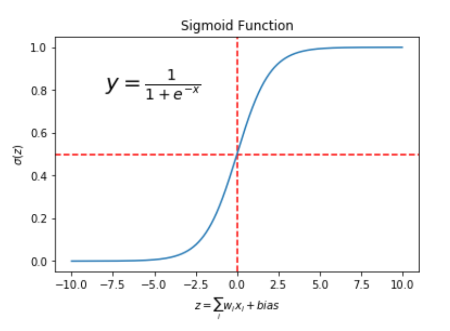center
- A differentiable function that “squashes” values between 0 and 1.
- Addresses limitations of the step function.
Activation Functions
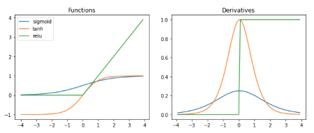center
- Crucial for introducing non-linearity to the network.
- Enables learning complex patterns.
- Many types: ReLU (Rectified Linear Unit), Tanh, Leaky ReLU, etc.
Regression With TensorFlow (Keras)
Keras
The Python Deep Learning Library
- High-level API for quickly building and training ML models.
- Integrates seamlessly with TensorFlow 2.
- Simplifies complex deep learning model design.
Keras: Sequential Models
- Linear stack of layers: Each layer feeds directly into the next.
- Ideal for simple feed-forward networks where data flows in one direction.
- Alternative: Functional API for more complex, graph-like architectures.
Keras: Layers
#| max-lines: 8
from tensorflow.keras import layers
# Input layer (implicitly created) and 1st hidden layer with 32 nodes
layer_1 = layers.Dense(32, input_shape=[8])
# 2nd hidden layer with 16 nodes and ReLU activation
layer_2 = layers.Dense(16, activation='relu')
# Output layer with 1 node for regression
layer_3 = layers.Dense(1)
# These layers would typically be combined in a Sequential model
# e.g., model = keras.Sequential([layer_1, layer_2, layer_3])Denselayer: Every node connects to every node in the previous/next layer.input_shape: Defines the number of features in the input.- First argument: Number of nodes (\(\textit{units}\)) in the layer.
activation: Specifies the activation function (e.g.,'relu','sigmoid').
Keras: Dense Neural Network Architecture
#| max-lines: 7
from tensorflow import keras
from tensorflow.keras import layers
model = keras.Sequential([
layers.Dense(64, input_shape=[8], activation='relu', name='hidden_layer_1'),
layers.Dense(64, activation='relu', name='hidden_layer_2'),
layers.Dense(1, name='output_layer')
])
model.summary()Model Visualization
Keras: Other Layer Types
#| max-lines: 8
from tensorflow.keras.layers import (
AveragePooling1D,
Conv3D,
GRU,
RNN,
ZeroPadding3D,
LSTM,
BatchNormalization,
Dropout,
Reshape
)
# Not an exhaustive list, just examples for different ML tasks.
# Each serves a specific purpose in processing different data types.
# These are imported for conceptual understanding, not direct execution.
# Actual usage involves constructing models from these layers.Denseis just one type; Keras offers many specialized layers:- Convolutional layers (
Conv2D,Conv3D): For spatial data (images, videos). - Recurrent layers (
LSTM,GRU): For sequential data (time series, text). - Pooling layers (
MaxPooling1D,AveragePooling2D): For downsampling. - Normalization layers (
BatchNormalization): For stabilizing training. - Regularization layers (
Dropout): For preventing overfitting.
- Convolutional layers (
Keras: Model Compilation
#| max-lines: 8
from tensorflow import keras
from tensorflow.keras import layers
model = keras.Sequential([
layers.Dense(64, input_shape=[8], activation='relu'),
layers.Dense(1)
])
model.compile(
loss='mse', # Mean Squared Error
optimizer='Adam', # Adaptive Moment Estimation optimizer
metrics=['mae', 'mse'], # Track Mean Absolute Error and Mean Squared Error
)
# print(model.optimizer) # Uncomment to inspect optimizer- Configures the model for training.
lossfunction: Measures how well the model performs.optimizer: Algorithm to adjust weights and minimize the loss.metrics: Evaluation criteria, displayed during training.
Keras: Model Training
#| max-lines: 10
import numpy as np
from tensorflow import keras
from tensorflow.keras import layers
# Dummy data for demonstration
training_df = {
"feature1": np.random.rand(100, 8),
"target_column": np.random.rand(100)
}
feature_columns = ["feature1"]
target_column = "target_column"
model = keras.Sequential([layers.Dense(1, input_shape=[8])])
model.compile(loss='mse', optimizer='Adam', metrics=['mae'])
EPOCHS = 5
history = model.fit(
training_df["feature1"],
training_df[target_column],
epochs=EPOCHS,
validation_split=0.2, # Use 20% of training data for validation
verbose=0 # Suppress output for concise presentation
)
print(history.history) # Display training historymodel.fit(): Method to train the model.epochs: Number of times the entire dataset is passed forward and backward through the neural network.validation_split: Fraction of data to use for validation during training.- Returns a
Historyobject containing loss and metric values per epoch.
Keras: Making Predictions
#| max-lines: 6
import numpy as np
from tensorflow import keras
from tensorflow.keras import layers
# Assume 'model' is already trained (from previous slide)
# Dummy testing data for demonstration
testing_df = {
"feature1": np.random.rand(10, 8)
}
feature_columns = ["feature1"]
# Generate predictions
predictions = model.predict(testing_df["feature1"])
print("First 5 predictions:")
print(predictions[:5])model.predict(): Generates output predictions for new input data.- Returns an array of predictions, matching the output layer’s shape.
Your Turn! Regression with TensorFlow
Tip
Lab: Build a deep neural network using Keras to predict California housing prices.
Regression Project
Predicting Insurance Charges
Review: What regression models have we learned about?
Review: What tools have we learned about?
Review: What data analysis and preparation techniques have we learned about?
Review: How do we measure the quality of a model?
Regression Project: The Data
| Column | Type | Description |
|---|---|---|
age |
number |
age of primary beneficiary |
sex |
string |
gender of the primary beneficiary |
bmi |
number |
body mass index of the primary beneficiary |
children |
number |
number of children covered by the plan |
smoker |
string |
is the primary beneficiary a smoker |
region |
string |
geographic region of the beneficiaries |
charges |
number |
costs to the insurance company (target) |
Regression Project: Your Turn
- Problem Framing: Understand the context, potential biases, and impact.
- Exploratory Data Analysis (EDA): Acquire, clean, and visualize the data.
- Model Building: Choose, train, and evaluate a regression model.